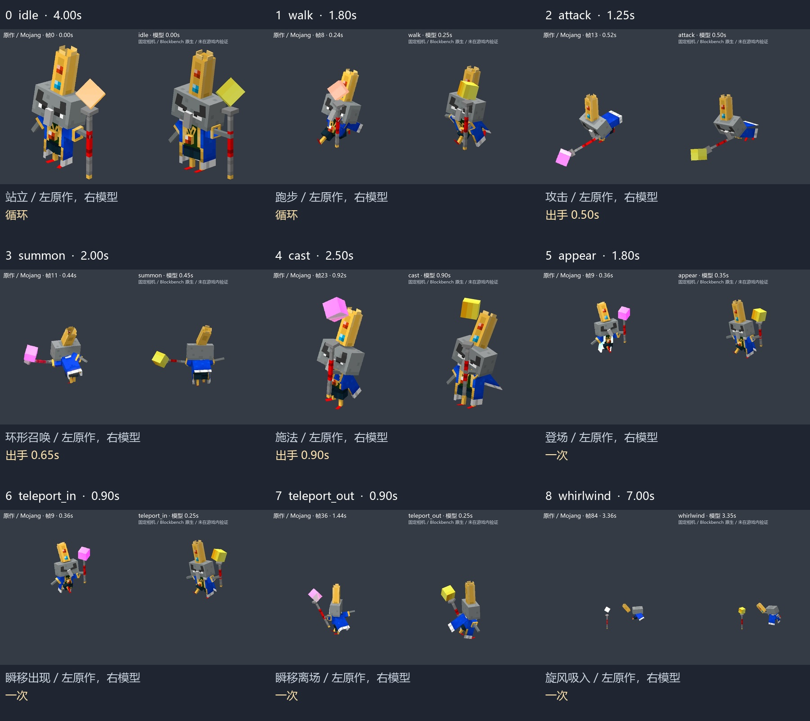

教皇 · M3 动作审阅
已保留 B 眼神与确认的静态模型。左侧原作 / Mojang，右侧 Blockbench 模型。未在真实游戏内看过。
当前停在 M3，等待用户确认。原作瞬移缩放/透明没有制作；旋风末尾0.6秒收拢是推断，部件体积没有消失。动态颜色与特效未制作。
完整报告 · 挂点 · 时长/出手/帧映射 · 音效时刻

0 · idle — 站立 · 4.00 秒
有动图。出手：—
全部关键帧并排

参考视角 / 侧面 / 背面

1 · walk — 跑步 · 1.80 秒
有动图。出手：—
全部关键帧并排

参考视角 / 侧面 / 背面

2 · attack — 攻击 · 1.25 秒
有动图；出手候选为推断。出手：0.50秒
全部关键帧并排

参考视角 / 侧面 / 背面

3 · summon — 环形召唤 · 2.00 秒
有动图；出手候选为推断。出手：0.65秒
全部关键帧并排

参考视角 / 侧面 / 背面

4 · cast — 施法 · 2.50 秒
有动图；出手候选为推断。出手：0.90秒
全部关键帧并排

参考视角 / 侧面 / 背面

5 · appear — 登场 · 1.80 秒
有动图；片段剪裁与无缩放适配为推断。出手：—
全部关键帧并排

参考视角 / 侧面 / 背面

6 · teleport_in — 瞬移出现 · 0.90 秒
有共用动图；切段与时长适配为推断。出手：—
全部关键帧并排

参考视角 / 侧面 / 背面

7 · teleport_out — 瞬移离场 · 0.90 秒
有共用动图；切段与时长适配为推断。出手：—
全部关键帧并排

参考视角 / 侧面 / 背面

8 · whirlwind — 旋风吸入 · 7.00 秒
有动图；最后中心收拢为推断。出手：—
全部关键帧并排

参考视角 / 侧面 / 背面

原作素材版权属于 Mojang。本项目为非商业同人，与 Mojang 无关联。详见 SOURCES.md。